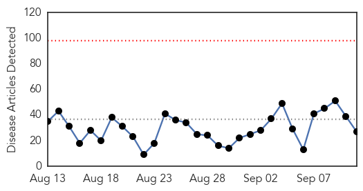
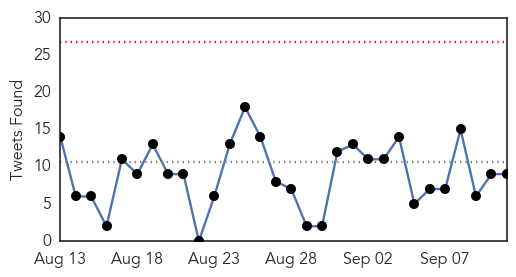
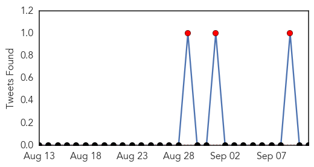

Ebola
30-Day Web Trend
0 alerts, 0 warnings

30-Day Twitter Trend
0 alerts, 0 warnings

Article Locations
Article Confidences
Top Articles:
- 1.000
- Ebola watch: One year later, many nurses say government left them ill-prepared
- 0.998
- Meet Two Sisters Taking On The Ebola Aftermath In West Africa
- 0.989
- Philippines bans monkey exports over Ebola deaths
- 0.983
- Philippines suspends monkey exports after Ebola deaths
- 0.980
- Sierra Leone records 5th Ebola case
- 0.974
- Super-sensitive Ebola test could curb disease spread
- 0.974
- Sex and masturbation can hamper Ebola eradication efforts
- 0.968
- Patrice Motsepe donates R11 million to fight Ebola
- 0.938
- Sierra Leone News: Bussel Airline increases flights to Salone
- 0.913
- Ebola paperwork: It looks important, but no one collects it
- 0.913
- IF SLPP WANT TO REGAIN GOVERNANCE IN THE COUNTRY, THEY HAVE TO DO TWO THINGS ONLY
- 0.908
- Gavi Rebuilds Immunization Services in West Africa
- 0.906
- Ellen, Boakai receive post-Ebola honor
- 0.897
- Page not found
- 0.855
- Of Ebola and a world of ignorance -By Fola Ojo
- 0.845
- Royal Navy personnel awarded for help tackling Ebola crisis
- 0.799
- African scientists funded to seek cures
- 0.781
- Welcome to the Expotimes News
- 0.760
- African scientists funded to seek cures for AIDS, Ebola at home
- 0.685
- DOH finds handlers of monkeys negative of Ebola Reston Virus
- 0.683
- African scientists funded to seek cures
- 0.650
- Brussels Airlines doubles flight frequency to Monrovia and Freetown
- 0.639
- Offline: A pervasive failure to learn the lessons of Ebola
- 0.550
- Camps are good for political parties including the SLPP
- 0.546
- The World Is Running Out Of A Critical Snakebite Antidote
- 0.520
- Philippines suspends monkey exports after Ebola deaths
- 0.520
- MedShare Talk & Taste Presented by Halyard Health
Top Tweets:
- 0.992
- Ebola virus mutations may help it evade drug treatment - Medical Xpress http://t.co/T1br6tAYi2 ebola EVD
- 0.940
- UN health agency warns Ebola outbreak in West Africa has 'a very nasty sting in its tail' -... http://t.co/jVyPuHbat7
- 0.940
- UN health agency warns Ebola outbreak in West Africa has 'a very nasty sting in its tail' -... http://t.co/3wgkvrDlLs
- 0.940
- Meet Two Sisters Taking On The Ebola Aftermath In West Africa - Fast Company http://t.co/sYynSDDcP1 ebola EVD
- 0.920
- Ebola virus mutations may help it evade drug treatment - Medical Xpress http://t.co/35XFH6DcPg
- 0.879
- ¿Existe un vínculo entre la deforestación y los brotes de enfermedadesinfecciosas? Ebola http://t.co/EQnxbReSMH
- 0.837
- Ebola Treatment Trials https://t.co/Pf94PL3V1F
- 0.829
- African scientists funded to seek cures for AIDS, Ebola at home - Yahoo News http://t.co/rqYc7q2Q7I ebola EVD
- 0.790
- IMF says it's committed to backing Liberia's recovery from Ebola - Yahoo News http://t.co/Aa3ag7YccH ebola EVD
- 0.779
- Elimination of Ebola Virus Transmission in Liberia — September 3, 2015 Ebolafree http://t.co/V0w9CKnpFz
- 0.742
- Three New Ebola Patients Found in Sierra Leone -... http://t.co/fCA2i0y6iO
- 0.728
- Horrific conditions couldn't stop Royal Navy nurse Anne helping Ebola victims - Portsmouth News http://t.co/wd0NL2Nvw1 ebola EVD
- 0.700
- Three new patients test positive for Ebola in Sierra Leone http://t.co/UlaIT4k0Ml
- 0.700
- Three new patients test positive for Ebola in Sierra Leone http://t.co/Fy410dZblw
- 0.673
- How has the Ebola outbreak changed the local media landscape in Liberia? @Eboladeeply weighs in http://t.co/CJ9eXn4gES
- 0.667
- 10 Sept - news pouch on avianflu avianinfluenza Ebola EbolaResponse MERS is here: http://t.co/kPyaivOhX3
- 0.562
- Meet Two Sisters Taking On The Ebola Aftermath In West Africa - Fast Company http://t.co/Hc5VdtXDYS
Swine Flu
30-Day Web Trend
0 alerts, 0 warnings
30-Day Twitter Trend
1 alerts, 0 warnings

Article Locations
Article Confidences

Top Articles:
Top Tweets:
- 0.631
- FluFactFriday: Swine flu viruses can spread from pigs to people. Learn how to minimize your risk: http://t.co/CAXUgtUy0t